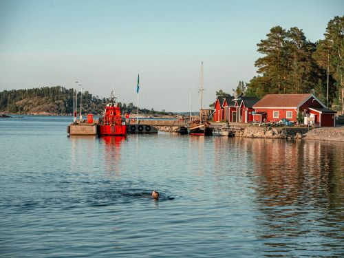
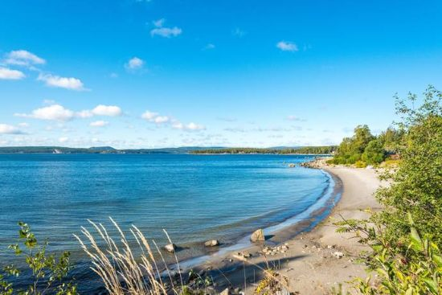

Alnö

Alnö (även kallad Alnön) är en 65 km² stor ö utanför Sundsvall.
Ön, som är Sveriges 16:e största och Norrlands näst största, är 15 km lång
och 6 km bred på bredaste stället.
Kallas i folkmun även för "Norrlands hawaii" och är en härlig sommarpärla där du finner
flera vackra sandstränder, exklusiva sjökrogar och caféer, naturreservat och slående
havsutsikt.
Alnön har ett idealiskt läge mellan Indalsälven och Ljungan och med perfekta hamnar
i Alnösundet. Här byggdes sågverken tätt. Som mest var 16 sågar i gång samtidigt.

Histora
Alnön bildades för cirka 570 miljoner år sedan genom vulkanisk verksamhet i området.
På grund av dess vulkaniska historia innehåller norra Alnöns berggrund sällsynta
mineral, bland annat de världsunika bergarterna alnöit och borengit.
Brytning av
järnmalm från två mindre gruvor för förädling i Galtströms bruk skedde under
1800-talet, med utlastning från Ås brygga. Under andra världskriget bröts baryt
för användning som råvara för målarfärg i en gruva i Pottäng.
Boliden AB
provbröt omkring 1950 en fyndighet med juvit vid Näset av Boliden för
aluminiumframställning.